Using the Troop App
Events, RSVPs, what to wear and bring, chat, and photos all live in our app at my.troop3054.org. Here's how to use it, whether you're a parent, a Scout, or a leader.
What the App Is
The troop's private app. Only troop families and leaders can sign in.
Go to my.troop3054.org on your phone or computer. There's nothing to download from an app store. It runs in your browser, and you can put it on your home screen like any other app.
The bar along the bottom gets you everywhere:
- Home: what's happening today and next, the latest photos, and announcements
- Events: every meeting, campout, and service project
- Chat: group conversations with the troop
- Photos: pictures from troop events
- Profile: your Scout's record and your account
On a computer, the same links run across the top. Leaders also see a Leaders menu at the top.
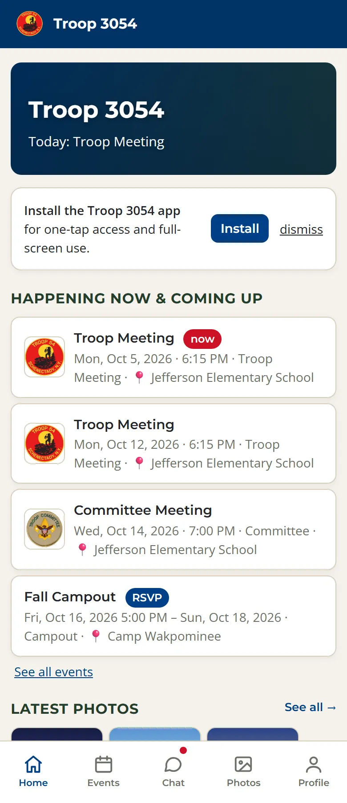
Signing In
No password to remember. Pick whichever way works for you.
Parents and leaders
- Continue with Google: if the troop has your Google address (like a Gmail), tap it, pick your account, and you're in.
- Email me a sign-in code: type your email and we'll send a 6-digit code. Type the code into the app. It works for 30 minutes.
Scouts
Tap Scouts: sign in with your name and PIN. A parent sets up the PIN from their Profile in the app.
New to the troop?
Tap New to the troop? Request access at the bottom of the sign-in screen. Give your name, your email, and your Scout's first and last name. A leader approves it and emails you a sign-in link.
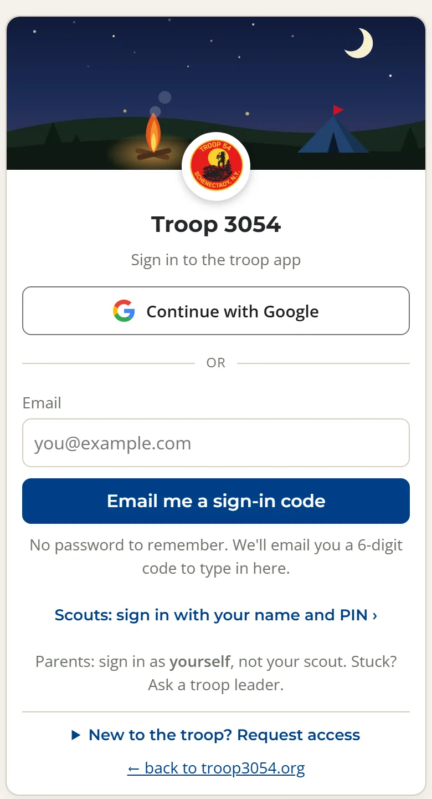
Put It on Your Phone
One tap to open, full screen, and it can send you notifications.
iPhone
- Open my.troop3054.org in Safari.
- Tap the Share button (the square with an arrow), then Add to Home Screen, then Add.
- Open the app from the new icon from now on, and sign in there.
Android
- Open my.troop3054.org in Chrome.
- Tap Install on the "Install the Troop 3054 app" card on the Home screen, or open Chrome's menu (⋮) and tap Install app or Add to Home screen.
Notifications
Get a buzz for announcements and urgent messages.
- Open Profile and find Notifications.
- Tap Turn on notifications, then allow them when your phone asks.
On an iPhone, notifications only work once the app is on your home screen. Scouts' devices stay quiet overnight. Notifications to them wait until morning.
Events & RSVPs
Every meeting, campout, and service project, with what to wear and bring.
Open Events to see what's coming. Switch between List and Calendar, look back at Past events, or show just one kind, like campouts.
Tap an event to see when and where it is. Tap the address for a map.
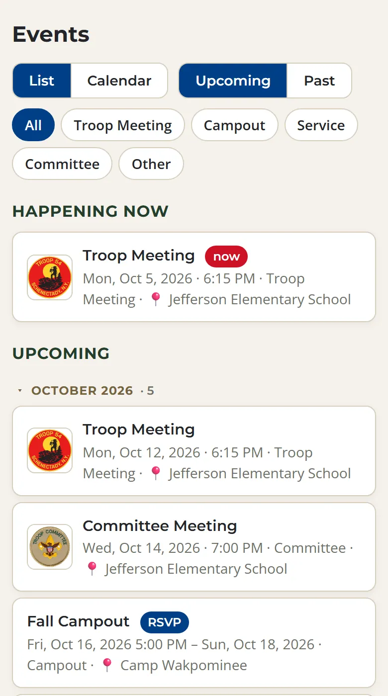
What to wear and bring
When the Scouts have planned a meeting, its Plan shows the uniform (Class A or Class B), what to bring, and how the meeting will run. The uniform and what to bring also show on the public calendar.
Add it to your calendar
Open Details & add to calendar and tap Google Calendar or Apple / Outlook. To get every troop event in your phone's calendar at once, tap Subscribe on our calendar page.
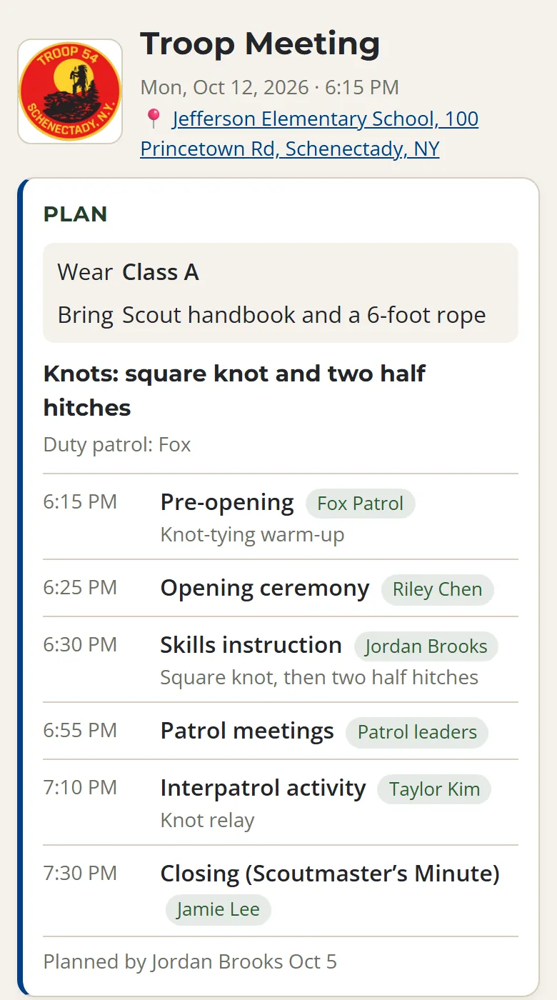
RSVP
Events that need a head count, like campouts, ask Who's going? Tap Going or Not going for yourself and for each of your Scouts. You can change it until the event.
Event discussion
Every event has its own group chat for questions and coordination. It notifies the people going.
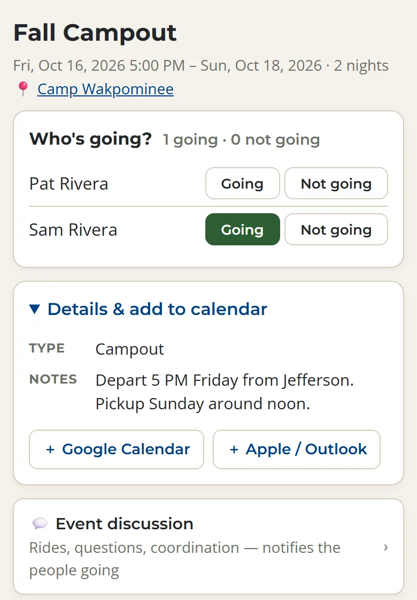
Chat
Group conversations only. There are no private messages.
- Everyone: the whole troop, families and leaders
- Leaders and Committee: for the adults on them
- Event discussions: one for each event
Every conversation is a group, in line with Scouting America's Youth Protection rules. Leaders can use @everyone when something can't wait.
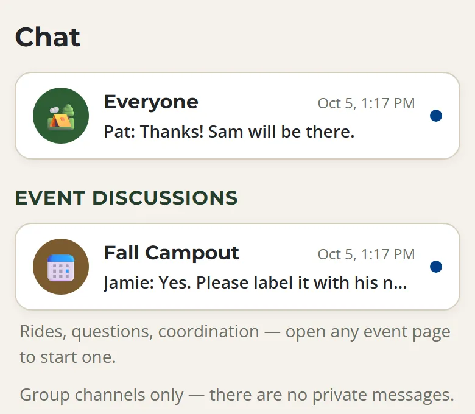
Photos
Pictures from troop events, for troop families only.
Open Photos to see pictures by event, newest first. To add yours, open the event and tap Add photos. You can pick several at once.
Photos added in the app stay in the app. They're never posted to this public website.
Your Profile
Your Scout's record and your account settings.
- Your Scout's record: meetings attended, campouts, camping nights, and volunteer hours. Tap a tile to see just those events.
- Set up your Scout's sign-in PIN so they can sign in on their own.
- Notifications for this device.
- Feedback: found something confusing? It goes straight to the troop admins.
At the bottom, My account shows who's signed in, with Sign out, your email addresses, and your PIN.
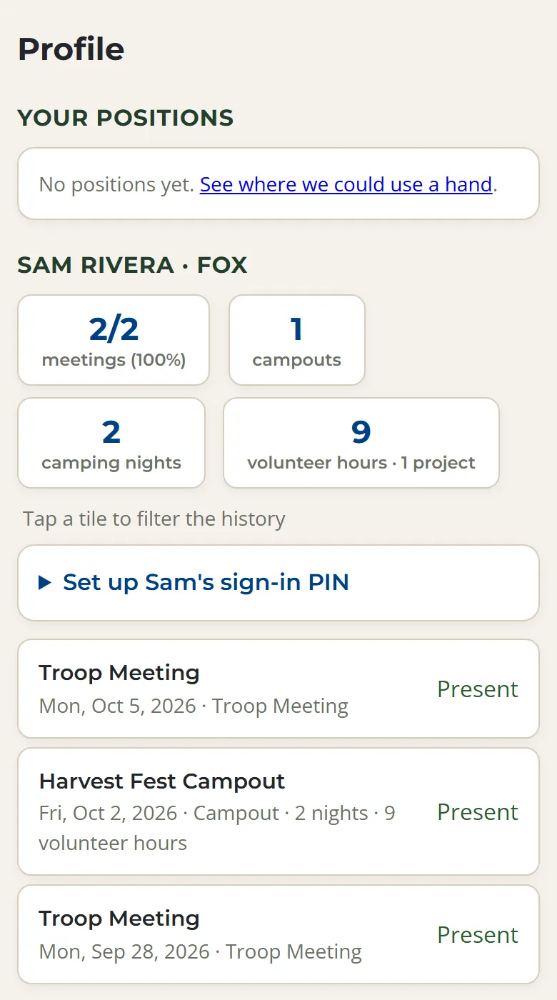
Scouts
Your events, your record, and what to bring.
- Sign in with your name and PIN. Ask a parent to set it up from their Profile.
- Check Events for what to wear and bring.
- Your Profile shows your meetings, campouts, camping nights, and volunteer hours.
- Earned a rank? Tap update rank on your Profile, and a leader confirms it.
Everything a Scout can see in the app, their parents can see too.
Planning Meetings (PLC)
The Patrol Leaders' Council plans the program, and the plans live right on each event.
The SPL, ASPL, patrol leaders, Troop Guide, Scribe, and Quartermaster can write plans. Adult leaders can read them.
The Program page
Tap Program at the top. It shows the next 8 weeks, which meetings are planned, how far ahead, which reviews are waiting, and any events still missing a time or place.
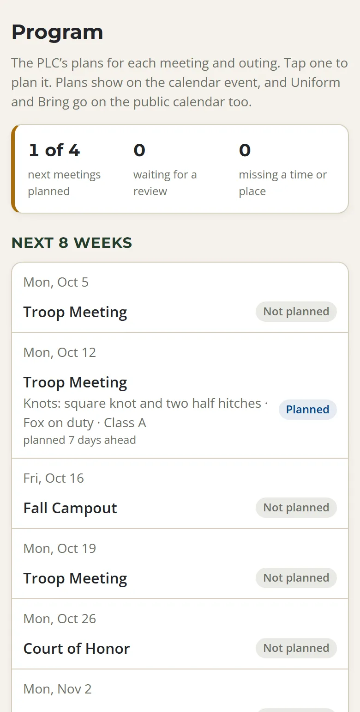
Plan a meeting
- Open the meeting and tap Plan this meeting.
- Fill in the focus, the duty patrol, the uniform, and what to bring.
- The run of the meeting starts from Scouting America's troop meeting plan. Adjust the times and put a Scout's name on each part.
- Tap Save plan. Families see what to wear and bring right away.
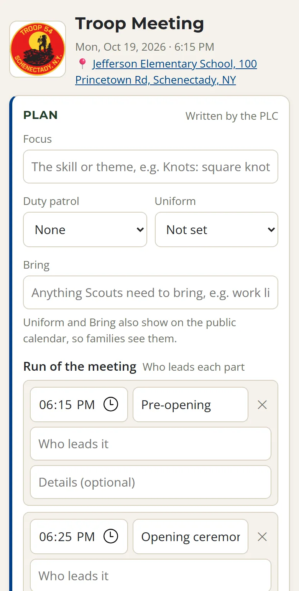
After the meeting
Tap How did it go? Add the review and write a line each for what worked, what didn't, and what to change next time. The PLC reads these when planning the next one.
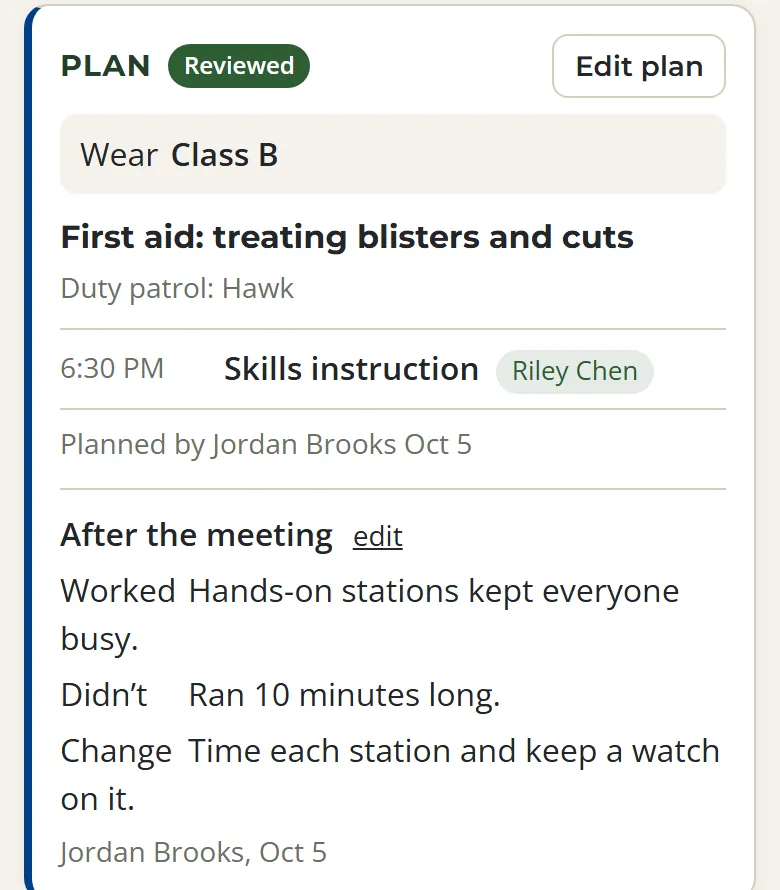
Taking Attendance
For leaders, and for Scouts who take attendance as Scribe.
- On meeting night, tap Check in on the Home screen, or open the meeting. On the day of an event, attendance is at the top of its page.
- Pick Present, Absent, or Excused, then tap each name. Tap again to clear it.
- For campouts and service projects, tap everyone who went. For someone who came for part of a trip, tap adjust stay.
For meetings, anyone left unmarked counts as absent. Before an event, attendance is tucked away, but you can still open it to mark an excused absence early.
The Attendance report in the Leaders menu has the totals, with a spreadsheet download for entering in Scoutbook.
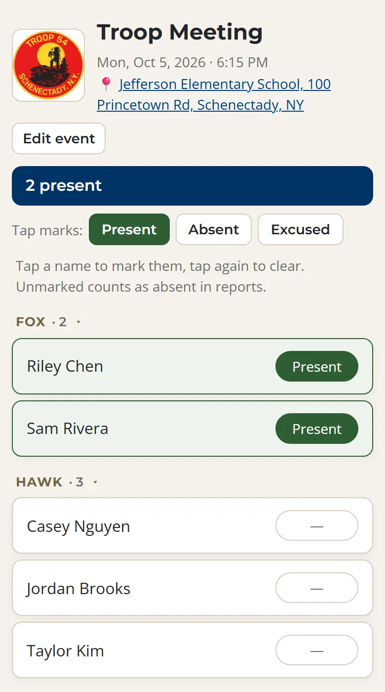
Adding Events
Everything on the calendar starts here.
- Open Events and tap Add event.
- Fill in the date, start and end times (leave them blank for an all-day event), the kind of event, and the location.
- Tick Collect RSVPs if you need a head count.
- Under More, add notes, links like a permission slip, or a cover image.
Volunteer hours each: a service event works its hours out from its times. Any other event gives hours only if you type a number in, like a campout where the Scouts volunteered.
To change an event, open it and tap Edit event at the top.
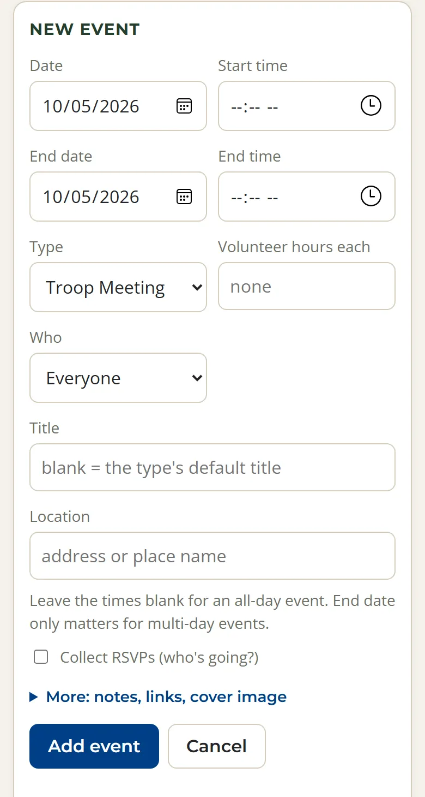
The Leaders Menu
The pages behind the scenes. Which ones you see depends on your role.
- Scouts & families: the roster, patrols, ranks, parents, and join requests
- Adults: leaders, roles and backups, and merit badge counselors
- Attendance report: totals and a spreadsheet download
- Program: the PLC's plans and reviews
- Recruiting: what to post and when, for the pack and the troop
- Community: email the troop and the weekly digest
- Settings: weekly meetings, quiet hours, and backups
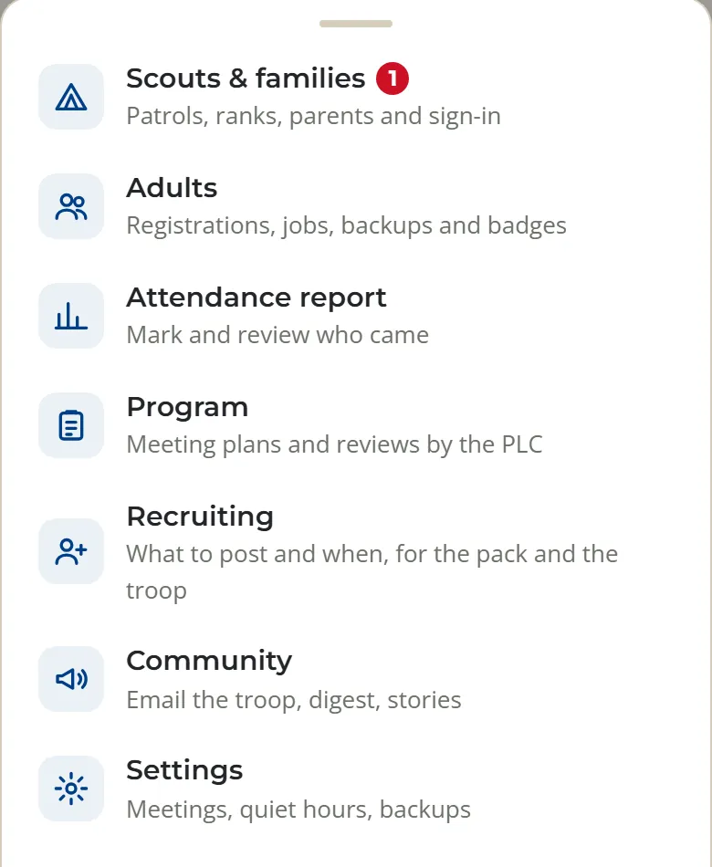
Approving New Families
For admins. New families ask from the sign-in screen, and an admin approves them.
- Admins get an email when someone asks to join, and the request waits on Scouts & families.
- The card shows whether the Scout's name they typed matches someone on the roster. Check it before you link anyone.
- Open Approve & invite, choose Parent / Guardian or Leader / Committee, tick their Scout, and tap Confirm & send sign-in link.
If the person is already on the roster under another email, add the new address to their entry instead, so they don't end up with two accounts. The card warns you when it spots a match.
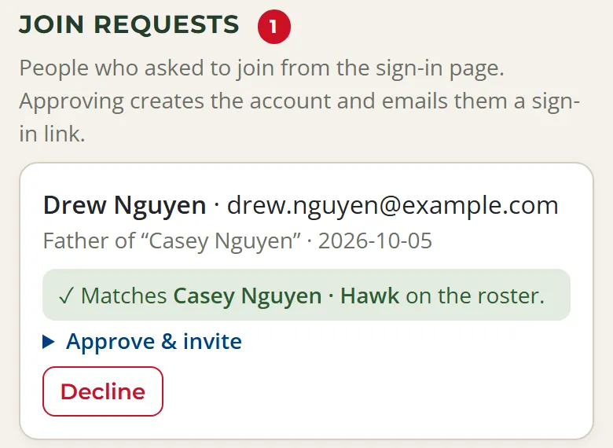
Troubleshooting
The questions we hear most.
I never got the code.
Check your spam folder. Codes only go to an address the troop already has. New to the troop, or using a different email? Tap Request access, or ask a leader to add your address.
Google says it doesn't know my address.
Sign in with the email the troop has for you, or ask a leader to add your Google address to your entry.
It keeps asking me to sign in.
Open the app from its home-screen icon and sign in there. If you use an emailed code, type it into the app instead of tapping the link. After that, you stay signed in as long as you open it at least once every 60 days.
My Scout can't sign in.
Open your Profile and tap Set up (or Reset) your Scout's sign-in PIN. They sign in with their name and that PIN.
I don't get notifications on my iPhone.
Add the app to your home screen first, open it from there, then turn notifications on in Profile.
Something looks wrong.
Use Feedback at the bottom of your Profile, or contact us.
Privacy & Youth Protection
How the app keeps Scouts and families safe.
- Only troop families and leaders can sign in. Chat, photos, and the roster never appear on the public website.
- There's no private messaging. Every conversation is a group, in line with Scouting America's Youth Protection rules.
- Everything a Scout can see, their parents can see.
- Scouts' devices get no notifications overnight.
Read the details in our privacy policy.
Ready to Sign In?
Still stuck? A troop leader can get you set up at any Monday meeting.